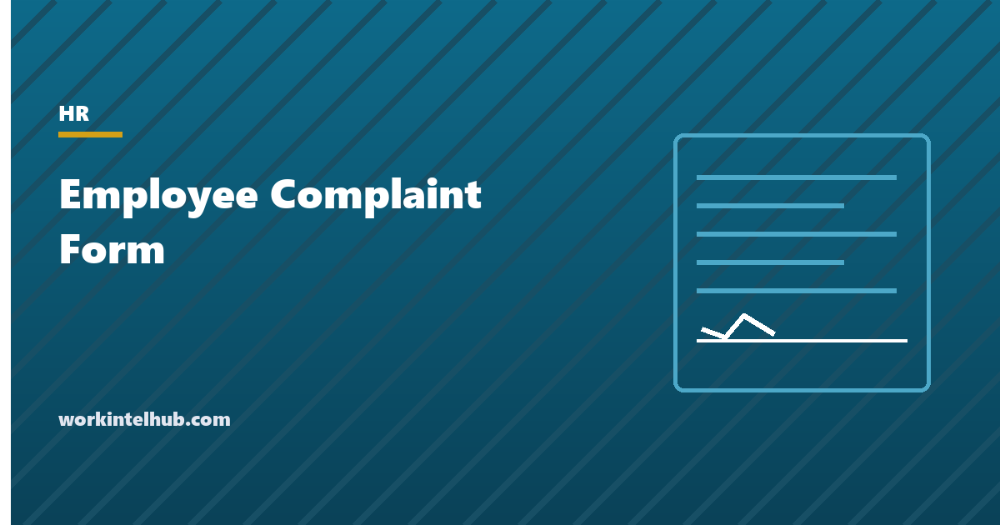

Employee Complaint Form

An employee complaint form is the front door of a grievance process: the document an employee uses to put a concern on the record, and the document HR uses to start handling it. It matters more than its simplicity suggests. A complaint that was made and not recorded is, in every later dispute, a complaint the employer cannot prove it handled; a form that asks the right questions gets the facts while they are fresh, and a form that states the anti-retaliation rule on its face is the employer's best evidence that the rule existed.
The generator below produces the form for five kinds of concern. The rest of the page covers the handling procedure that the form starts, the timelines, the retaliation rules that apply the moment a complaint is made, the anonymous-complaint question, and what the file has to show at the end.
Employee complaint form generator
Nothing typed here leaves your browser. The form is the front of the process; the handling procedure, the investigation and the record are the rest of it.
What the form asks and why
| Section | Why it is there |
|---|---|
| Anti-retaliation statement at the top | Legally required in substance under most anti-discrimination and whistleblower laws; on the form, it is evidence the employee was told |
| Complainant details, optionally anonymous | Follow-up and interim measures need a contact; anonymity limits both and the form says so |
| What happened, in the employee's words | The contemporaneous account is the most reliable one and the one an investigator returns to |
| When, where, continuing | Establishes timing for any deadline and whether interim measures are needed now |
| Who was involved and witnesses | The investigation plan starts here |
| Type-specific section | Protected basis for harassment; hazard details for safety; pay periods for wage complaints; the protected activity and dates for retaliation |
| Documents | Preserves evidence before it is deleted or overwritten |
| Previous reports | A complaint raised before and ignored is the employer's exposure; the form surfaces it |
| Desired outcome | Often modest; knowing it shapes the resolution |
| HR-use block | The timeline of handling, which is the audit trail |
The form should be available in the handbook, on the intranet and on paper from any supervisor, and a complaint made in any other way, verbally, by email, to a manager in the hallway, is still a complaint. HR fills in the form from the conversation in that case; the employee is not sent away to do paperwork. The handbook guide covers where the policy sits.
The handling procedure
- Acknowledge in writing within two business days. What was received, who is handling it, the anti-retaliation rule, and an expected timeline.
- Decide interim measures immediately for harassment and safety. Separating the parties, a schedule change, removing a hazard from use. Measures must not disadvantage the complainant; moving the person who complained to a worse shift is retaliation.
- Assign an investigator without a stake. Not the accused's manager, not the complainant's manager if the complaint is about them, and outside counsel or a third party where the accused is senior.
- Interview the complainant, the accused and witnesses, in that order. Written notes, dated, with the questions asked. Tell each person the anti-retaliation rule and ask for confidentiality without demanding it (the NLRB has limited blanket confidentiality rules for non-supervisory employees).
- Reach a finding on the balance of probabilities. Substantiated, not substantiated, or inconclusive, with reasons. "Not substantiated" is a finding; "we could not determine" is a failure to decide.
- Act. Discipline under the progressive discipline policy, training, a policy change, or a documented decision that no action is warranted.
- Close in writing with both parties. The complainant learns that the matter was investigated and concluded and what protections continue; the specific discipline of another employee is usually not shared.
- Check back at 30 and 90 days. A short conversation with the complainant: has anything changed for the worse? This is the retaliation check, and the note of it is the employer's evidence.
Target 30 days from complaint to closure for most matters and say so in the acknowledgement. Complaints that drift for months are the ones that become charges.
Retaliation: the rule that applies from the moment of the complaint
Retaliation is the most frequently filed charge with the EEOC, appearing in more than half of all charges, and it is often the charge that succeeds when the underlying complaint does not. The rule is that an employer may not take a materially adverse action against an employee because they made a complaint, participated in an investigation, or opposed conduct they reasonably believed unlawful, whether or not the original complaint is upheld. "Materially adverse" is broad: not only firing and demotion but schedule changes, exclusion from meetings, a sudden run of write-ups, or a worse review, if a reasonable person would be deterred from complaining by it.
Practically: the complainant's manager is told the anti-retaliation rule in writing on the day the complaint is received. Any change to the complainant's duties, schedule, pay or evaluation in the following months is reviewed by HR before it happens and documented with its unrelated reason. Performance concerns that predate the complaint are handled under the ordinary process with the pre-existing documentation attached; performance concerns that first appear after it are treated with suspicion by everyone, including courts. The write-up template and the PIP guide both note this. Safety, wage and whistleblower complaints carry their own statutory anti-retaliation provisions (OSHA section 11(c), FLSA section 15(a)(3), and state laws) with the same shape.
Anonymous complaints and the record
Allowing anonymous complaints increases the number of concerns raised and makes each one harder to resolve. The reasonable position, which the generator's form takes, is to allow them, explain that the employer may be unable to follow up or investigate fully, and investigate what can be investigated. An anonymous report of a safety hazard can be checked by looking at the hazard; an anonymous report of harassment by one named person can be checked by interviewing others who work with them. What the employer may not do is ignore a complaint because it was anonymous.
The record at the end is the form, the acknowledgement, the investigator's notes and finding, the action taken, the closure letters and the follow-up notes, kept in a confidential investigation file separate from the personnel files of the people involved, and retained for the longest applicable period (EEOC charge-related records must be kept until the matter is finally disposed of; many employers keep investigation files for the duration of employment plus several years). A complaint that ends with that file is one the employer can defend. One that ends with a manager's memory is not.
Key takeaways
- The complaint form puts the concern on the record while the facts are fresh and states the anti-retaliation rule on its face.
- Acknowledge within two business days, decide interim measures immediately for harassment and safety, and aim to close within 30 days.
- Assign an investigator without a stake, interview complainant, accused and witnesses with dated notes, and reach a finding with reasons.
- Retaliation is the most common EEOC charge and succeeds even when the original complaint does not; any adverse change to the complainant is reviewed by HR first and documented.
- Allow anonymous complaints with the limits explained; investigate what can be investigated.
- Keep the investigation file separate from personnel files and retain it for the longest applicable period.
Frequently asked questions
What should an employee complaint form include?
An anti-retaliation statement at the top; the employee's details with an anonymous option; what happened in their own words; when, where and whether it is continuing; who was involved and any witnesses; a type-specific section such as protected basis for harassment or pay periods for wage complaints; documents; previous reports; the outcome they want; a signature; and an HR block recording receipt, acknowledgement, investigator, interim measures and closure.
How quickly should HR respond to an employee complaint?
Acknowledge in writing within two business days, naming who is handling it and the expected timeline. Decide interim measures the same day for harassment and safety matters. Aim to complete the investigation and communicate the outcome within 30 days; complaints that drift for months are the ones that become agency charges.
Can an employee file a complaint anonymously?
Most employers allow it, and the form should explain that anonymity may prevent follow-up or a full investigation. The employer must still investigate what can be investigated, such as a reported hazard or a pattern involving a named person, and may not ignore a complaint because it was anonymous.
What counts as retaliation after a complaint?
Any materially adverse action taken because the employee complained, participated in an investigation or opposed conduct they reasonably believed unlawful: firing, demotion, pay cuts, but also schedule changes, exclusion, a sudden run of write-ups or a worse review, if it would deter a reasonable person from complaining. It applies whether or not the original complaint is upheld, and it is the most common charge the EEOC receives.
Does a verbal complaint count?
Yes. A concern raised to a manager in conversation, by email or by phone is a complaint the employer must handle. HR should record it on the form from the conversation rather than sending the employee away to complete paperwork, and the manager who heard it must pass it to HR the same day.
Where should complaint records be kept?
In a confidential investigation file separate from the personnel files of everyone involved, containing the form, acknowledgement, investigator's notes and finding, action taken, closure letters and follow-up notes. Retain it for the longest applicable period; records relating to an EEOC charge must be kept until the matter is finally disposed of.